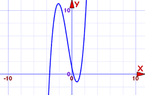

Polynomials: Bounds on Zeros
A clever way to know where to search for roots.
A Polynomial looks like this:
 |
| example of a polynomial this one has 3 terms |
A polynomial has coefficients:

The terms are in order from highest to lowest exponent
(Technically the 7 is a constant, but here it is easier to think of them all as coefficients.)
A polynomial also has roots:

A "root" (or "zero") is where the polynomial is equal to zero.
Example: 3x − 6 equals zero when x=2, because 3(2)−6 = 6−6 = 0
Where are the Roots (Zeros)?
It can sometimes be hard to find where the roots are!
... where should we search ... how far left or right should we go?
Here we will see a clever way to know where to search for all Real roots.
And it just uses simple arithmetic!
Steps
First we prepare our data:
- The leading coefficient must be 1. If it is not, then divide every term of the polynomial by the leading coefficient
- Write down all the coefficients
- Then throw away the leading coefficient!
- Remove minus signs
- And we now have a list of values for the next step
Now we can calculate two different "bounds" using those values:
- Bound 1: The largest value, plus 1
- Bound 2: The sum of all values, or 1, whichever is larger
The smallest of those 2 bounds is our answer ...
... all roots are within plus or minus of that!
Examples
Example: x3 + 2x2 − 5x + 1
The leading coefficient is 1, so we can continue.
The coefficients are: 1, 2, −5, 1
Drop the leading coefficient, and remove any minus signs: 2, 5, 1
- Bound 1: the largest value is 5. Plus 1 = 6
- Bound 2: adding all values is: 2+5+1 = 8
The smallest bound is 6
All Real roots are between −6 and +6
So we can graph between −6 and 6 and find any Real roots. It is best to plot a little wider so we could see if a curve has roots right at −6 or 6:

Now we can just zoom in to the graph to get more accurate values for the roots
Example: 10x5 + 2x3 − x2 − 3
the leading coefficient is 10, so we must divide all terms by 10:
x5 + 0.2x3 − 0.1x2 − 0.3
The coefficients are: 1, 0.2, −0.1, −0.3
Drop the leading coefficient, and remove any minus signs: 0.2, 0.1, 0.3
- Bound 1: the largest value is 0.3. Plus 1 = 1.3
- Bound 2: adding all values is: 0.2+0.1+0.3 = 0.6, which is less than 1, so the answer is 1
The smallest is 1.
All Real roots are between −1 and +1
I will leave the graphing to you.
Notes
"Bound 1" and "Bound 2" are not the only ways to find the bounds of the roots, but they are easy to use!
Also Note: Graphing polynomials can only find Real roots, but there can also be Complex roots.